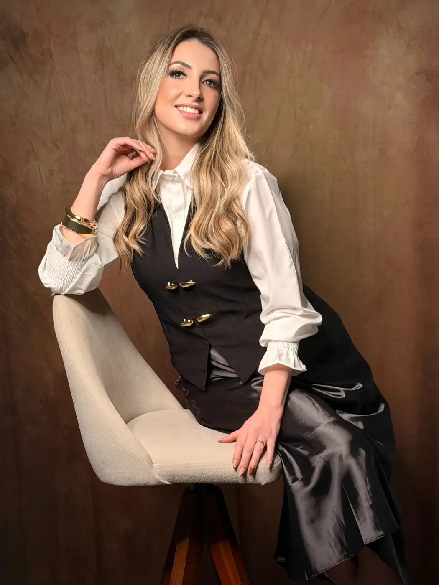
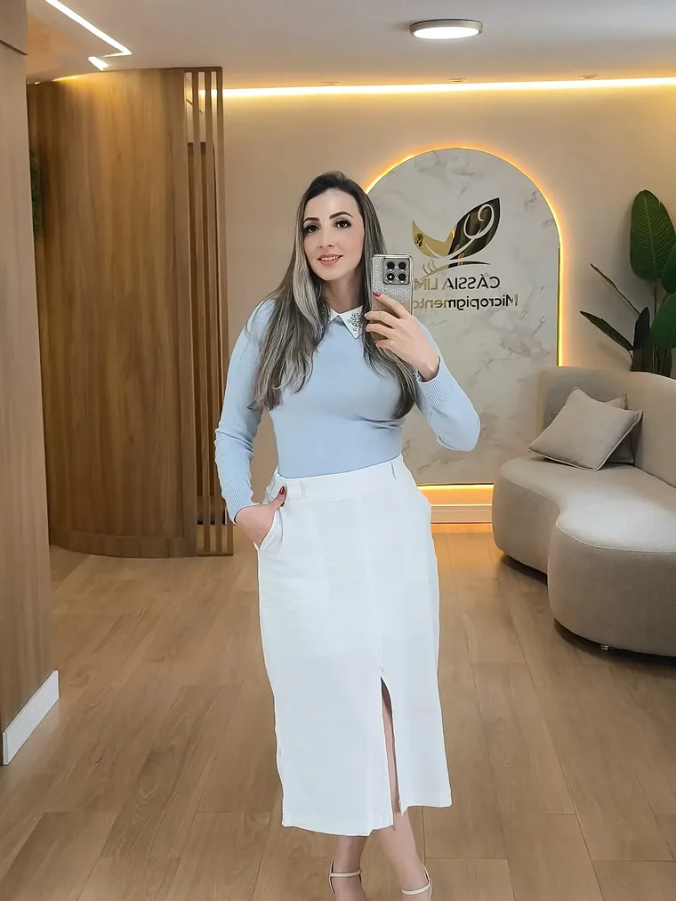

Cássia Lima · Máster Internacional · +11 anos
A técnica que valoriza cada traço.
Formação em Micropigmentação. Nano fios, labial e a rotina profissional de quem já formou mais de 3.000 alunas, em cursos presenciais e online.
- Prática guiada
- Certificado
- Presencial e online

- +11anos de micropigmentação
- +3.000alunas formadas
- 30,2 milseguidores no Instagram
- 2 formatospresencial e online
02 · Técnica em detalhe
Resultado que cicatriza bonito.
Acompanhe um labial em três momentos e veja de perto o acabamento das sobrancelhas. Toque nas fotos para ampliar.
03 · Quem conduz sua formação
Experiência que vira método.
Cássia Lima é micropigmentadora e mentora, Máster Internacional com mais de 11 anos de carreira. No estúdio que leva o nome dela, transforma técnica em rotina profissional para alunas de cursos presenciais e online.
- Prática guiadaDo desenho à execução, com acompanhamento de perto.
- SuporteOrientação para o seu momento profissional.
- CertificaçãoUm novo capítulo na sua carreira.

- Técnicacom direção
- Práticacom contexto real
- Carreiracom posicionamento
04 · Jornadas reais
Cada turma, um novo capítulo.
Registros de turmas certificadas com a Cássia. Mais de 3.000 alunas já passaram pela formação.
Deslize para ver as turmas. Toque para ampliar.
Formadas com a CássiaEntrega de certificados Turma certificadaRegistro de formatura Novo capítuloAlunas e certificados
05 · A trajetória
Mais de uma década dedicada ao detalhe.
- A baseMáster Internacional
Mais de 11 anos de experiência em micropigmentação.
- O estúdioCássia Lima Micropigmentação
Um espaço próprio para atender e formar novas profissionais.
- As alunas+3.000 formadas
Turmas presenciais e online, com certificado ao final.
- Hoje30,2 mil seguidores
Uma comunidade que acompanha o trabalho dela no Instagram.
Vamos conversar
Dê o seu próximo passo.
Conte seu momento profissional e fale com a equipe da Cássia sobre a Formação em Micropigmentação. Consulte formato, datas e disponibilidade.
Antes de começar
Dúvidas frequentes
Preciso ter experiência?
Confirme com a equipe da Cássia o nível indicado para a próxima turma. Pelo formulário você conta se está começando ou se já atende.
O curso é presencial ou online?
A Cássia oferece cursos nos dois formatos. Consulte o formato e as datas da próxima turma.
Emite certificado?
Sim, as alunas recebem certificado de conclusão ao final da formação.
Como recebo informações?
O formulário prepara uma mensagem e abre a conversa com a equipe. Você revisa e envia no aplicativo. Ele não faz uma inscrição automática.